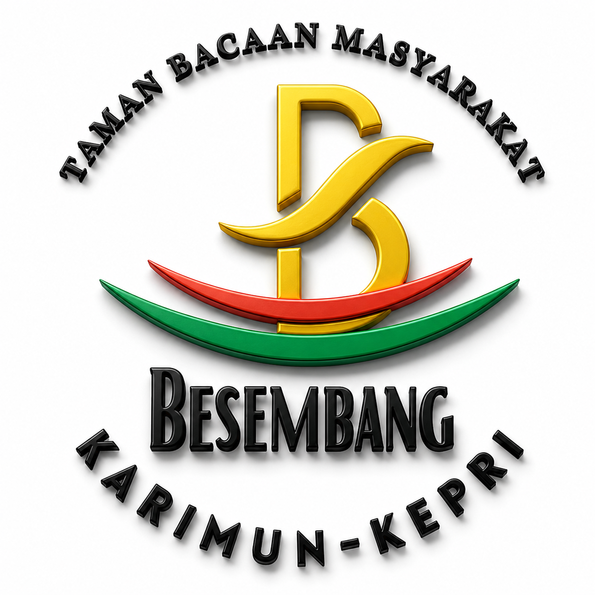

Menumbuhkan cinta ilmu pada setiap anak melalui stimulasi sensorik, seni, dan pendekatan personal yang suportif.

"Menjadi ruang belajar inklusif yang menumbuhkan cinta ilmu sesuai fitrah anak."
Bagian dari:
Sanggar Kreasi Seni Kibar Budaya
Ketua
Annisa Kurniati
Sekretaris
Jasmine Syifa H.H
Bendahara
Andiana Laela
Layanan pendidikan non-formal dengan pendekatan personal.
Rasio 1:3
Bimbingan kelompok kecil.
Rasio 1:1
Stimulasi intensif personal.
Mandiri
Life Skill & Akademik.
Gratis
Terbuka untuk umum & inklusif.
Struktur Visual Menenangkan
Penguatan Perilaku Belajar Bahagia
Fondasi Saraf & Emosi Seimbang
Imitasi & Atensi (Dasar Bicara)
Belajar Multisensori Holistik
Menjadi Pencerita yang Aktif